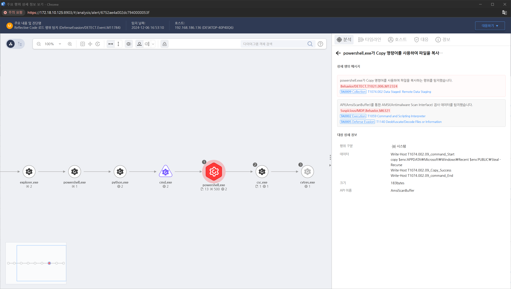

T1074.002.09 유출할 파일들을 특정 위치로 이동
D3FEND
MITRE ATT&CK 액션을 기준으로 대응 방안을 작성
Detection
powershell.exe가 Copy 명령어를 사용하여 파일을 복사하는 행위를 탐지합니다.
Detection(EDR)

Response
- Windows 이벤트 로그 모니터링:
파일 전송 및 접근 활동, 네트워크 연결 활동에 대한 이벤트 로그를 모니터링합니다.
- SIEM 도구 활용:
Splunk, Microsoft Sentinel, ELK Stack 등을 활용하여 파일 전송 또는 공유 디렉토리 접근을 실시간으로 탐지합니다.
- 네트워크 트래픽 분석:
외부 서버로의 대량 데이터 전송, 비정상적인 시간대의 트래픽 활동 감지하며, Wireshark, Zeek와 같은 도구를 활용하여 SMB/FTP 트래픽 패턴을 분석합니다.
- DNS 요청 분석:
공격자가 데이터 전송을 위해 생성한 C2(Command and Control) 서버와의 연결 여부를 확인합니다.
Mitigations
네트워크 공유 보안 강화
- SMB 트래픽을 모니터링하고 불필요한 네트워크 공유를 비활성화합니다
- 네트워크 공유 디렉토리에 대한 접근 권한을 최소화합니다
방화벽 설정
- 외부 네트워크로의 파일 전송을 제한하거나 승인된 IP로만 허용합니다.
VLAN 분리
- 데이터 스테이징에 사용할 수 있는 서버 또는 디렉토리를 별도의 VLAN으로 분리하여 접근을 제한합니다.
DLP(Data Loss Prevention) 도구 배포
- Windows Information Protection(WIP) 또는 타사 DLP 솔루션을 활용하여 민감한 데이터를 감지하고 무단 복사를 방지합니다
- DLP 규칙을 설정하여 클라우드 스토리지 서비스로의 민감 데이터 전송을 차단합니다.
파일 무결성 및 접근 제어
- 민감한 데이터를 암호화하여 무단 접근을 방지합니다, 파일 또는 폴더에 대한 액세스 및 변경 활동을 기록합니다.
권한 최소화
- 사용자 및 프로세스의 데이터 스테이징에 필요한 권한을 제한합니다, 비관리자 계정은 네트워크 공유 및 외부 디스크 사용 권한을 제한합니다.
원격 데이터 저장소 모니터링
- 클라우드 스토리지 또는 FTP 사용을 제한하거나 사용자 계정 모니터링을 강화합니다.
Affected Techniques
Action 실행시 함께 영향을 받는 다른 Techniqes
| D3FEND |
| D3-FIM File Integrity Monitoring |
| D3-FAPA File Access Pattern Analysis |